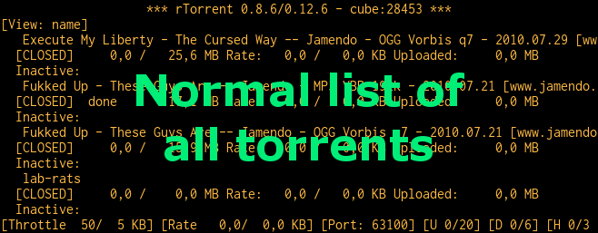
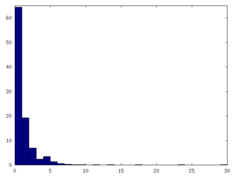
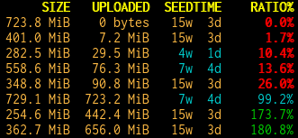
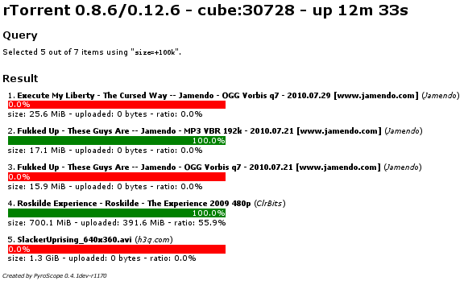
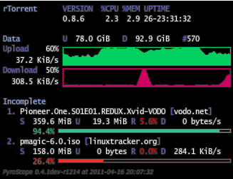

User’s Manual¶
This chapter provides an overview of all the command line tools and their everyday use, focussing on rtcontrol as the most powerful of them. The following chapters then go into more advanced use-cases and features.
Command Line Tools¶
Overview of CLI Tools¶
rtcontrol is the work-horse for rTorrent automation, it takes filter conditions
of the form ‹field›=‹value› and selects a set of download items according to them.
That result can then be printed to the console according to a specified format,
or put into any rTorrent view for further inspection.
You can also take some bulk action on the selected items, e.g. starting, stopping, or deleting them.
rtxmlrpc sends single XMLRPC commands to rTorrent, and rtmv allows you to move around the data of download items in the file system, while continuing to seed that data.
The following commands help you with managing metafiles:
lstor safely lists their contents in various formats.
mktor creates them, with support for painless cross-seeding.
chtor changes existing metafiles, e.g. to add fast-resume information.
pyrotorque is a companion daemon process to rTorrent that handles automation tasks like queue management, instant metafile loading from a directory tree via file system notifications, and other background tasks.
pyroadmin is a helper for administrative tasks (mostly configuration handling).
Common Options¶
All commands share some common options.
- --version¶
Show the command’s version number and exit.
- -h, --help¶
Show the command’s help information and exit.
- -q, --quiet, --cron¶
Omit informational logging, like the time it took to run the command.
- -v, --verbose¶
Increase informational logging, including some of the internal operations like configuration loading, and XMLRPC statistics.
- --debug¶
Always use
--debugwhen including logs in a bug report, since it shows stack traces for errors even when normally they’d be replaced by a more friendlier error message.This option also generates even more logging output than
-v, including detailed XMLRPC diagnostics. Often it’ll point you to the root of a problem, so you don’t have to create an issue.
- --config-dir <DIR>¶
Use a different configuration directory instead of the
~/.pyroscopedefault one.
Also see the PyroScope CLI Tools Usage section for an automatically generated and thus comprehensive listing of all the current options.
- PYRO_CONFIG_DIR¶
New in version 0.6.1.
This environment variable can be used to change the default
~/.pyroscopeof the--config-diroption, for the duration of a shell session, or within a systemd unit.
rtxmlrpc¶
rtxmlrpc allows you to call raw XMLRPC methods on the rTorrent instance that you have specified in your configuration. See the usage information for available options.
The method name and optional arguments are provided using standard shell
rules, i.e. where you would use ^X throttle_down=slow,120 in
rTorrent you just list the arguments in the usual shell way
(rtxmlrpc throttle_down slow 120). The rTorrent format is also
recognized though, but without any escaping rules (i.e. you cannot have
a , in your arguments then).
Remember that almost all commands require a ‘target’ as the first parameter
in newer rTorrent versions, and you have to provide that explicitly.
Thus, it must be rtxmlrpc view.size '' main, with an extra empty argument
– otherwise you’ll get a Unsupported target type found fault.
There are some special ways to write arguments of certain types:
+‹number› and -‹number› send an integer value,
@‹filename›, @‹URL›, or @- (for stdin) reads the argument’s content into a XMLRPC binary value,
and finally [‹item1›〈,‹item2›,…〉 produces an array of strings.
These typed arguments only cover some common use-cases,
at some point you have to write Python code to build up more intricate data structures.
The @‹URL› form supports http, https, and ftp, here is an example call:
$ rtxmlrpc load.raw_verbose '' \
@"https://cdimage.debian.org/debian-cd/current/amd64/bt-cd/debian-9.0.0-amd64-netinst.iso.torrent"
0
To get a list of available methods, just call rtxmlrpc system.listMethods.
The Using ‘rtxmlrpc’ section shows some typical examples for querying global information
and controlling rTorrent behaviour.
rtcontrol¶
Purpose¶
rtcontrol allows you to select torrents loaded into rTorrent using various filter conditions. You can then either display the matches found in any rTorrent view for further inspection, list them to the console using flexible output formatting, or perform some management action like starting and stopping torrents. Using ‘rtxmlrpc’ shows examples for sending commands that don’t target a specific item.
For example, the command rtcontrol up=+0 up=-10k will list all
torrents that are currently uploading any data, but at a rate of below
10 KiB/s. See the ‘rtcontrol’ Examples for more real-world examples,
and the following section on basics regarding the filter conditions.
Filter Conditions¶
Filter conditions take the form ‹field›=‹value›, and by default
all given conditions must be met (AND). If a field name is omitted,
name is assumed. Multiple values separated by a comma indicate
several possible choices (OR). ! in front of a filter value
negates it (NOT). Use uppercase OR to combine multiple alternative
sets of conditions. And finally brackets can be used to group conditions
and alter the default “AND before OR” behaviour; be sure to separate
both the opening and closing bracket by white space from surrounding
text. NOT at the start of a bracket pair inverts the contained condition.
For string fields, the value is a
glob pattern
which you are used to from shell filename patterns (*, ?, [a-z],
[!a-z]); glob patterns must match the whole field value, i.e. use
*...* for ‘contains’ type searches. To use
regex matches instead of globbing,
enclose the pattern in slashes (/regex/). Since regex can express
anchoring the match at the head (^) or tail ($), they’re by
default of the ‘contains’ type.
All string comparisons are case-ignoring.
If a string field’s filter value starts with {{ or ends with }},
it is evaluated as a template for each item before matching it with the current field value.
See Using Templates as Filter Values for a practical use of that.
For numeric fields, a leading + means greater than, a leading
- means less than (just like with the standard find command).
Selection on fields that are lists of tags or names (e.g. tagged and
views) works by just providing the tags you want to search for. The
difference to the glob patterns for string fields is that tagged search
respects word boundaries (whitespace), and to get a match the given tag
just has to appear anywhere in the list (bar matches on
foo bar baz).
In time filtering conditions (e.g. for the completed and loaded
fields), you have three possible options to specify the value:
time deltas in the form “
<number><unit>...”, where unit is a single upper- or lower-case letter and one ofYear,Month,Week,Day,Hour, mInute, orSecond. The order is important (ybeforem), and a+before the delta means older than, while-means younger than.Example:
-1m2w3da certain date and time in human readable form, where the date can be given in ISO (
Y-M-D), American (M/D/Y), or European (D.M.Y) format. A date can be followed by a time, with minutes and seconds optional and separated by:. Put either a space or aTbetween the date and the time.Example:
+2010-08-15t14:50absolute numerical UNIX timestamp, i.e. what
ls -l --time-style '+%s'returns.Example:
+1281876597
See Useful Filter Conditions for some concrete examples with an explanation of what they do.
mktor¶
mktor creates *.torrent files (metafiles), given the path to the data in a
file, directory, or named pipe (more on that below) and a tracker URL or alias name
(see Setting values in ‘config.ini’ on how to define aliases).
Optionally, you can also set an additional comment and a different name for the
resulting torrent file. Peer exchange and DHT can be disabled by using
the --private option.
If you want to create metafiles in bulk, use one of the many options a Linux shell offers you, among them:
Anything in the current directory:
ls -1 | xargs -d$'\n' -I{} mktor -p -o /tmp "{}" "$ANNOUNCE_URL"Just for directories:
find . -mindepth 1 -maxdepth 1 -type d \! -name ".*" -print0 | sort -z \ | xargs -0I{} mktor -p "{}" "$ANNOUNCE_URL"
If you create torrents for different trackers, they’re
automatically enabled for cross-seeding, i.e. you can load several torrents for
exactly the same data into your client. For the technically inclined,
this is done by adding a unique key so that the info hash is always
different.
Use the --no-cross-seed option to disable this.
You can also set the ‘source’ field many trackers use for unique info hashes,
use -s info.source=LABEL for that.
To exclude files stored on disk from the resulting torrent, use the
--exclude option to extend the list of standard glob patterns that
are ignored. These standard patterns are: core, CVS, .*,
*~, *.swp, *.tmp, *.bak, [Tt]humbs.db,
[Dd]esktop.ini, and ehthumbs_vista.db.
The --fast-resume option creates a second metafile
*-resume.torrent that contains special entries which, when loaded
into rTorrent, makes it skip the redundant hashing phase (after all, you
hashed the files just now). It is very important to upload the
other file without resume in its name to your tracker, else you
cause leechers using rTorrent problems with starting their download.
As a unique feature, if you want to change the root directory of the
torrent to something different than the basename of the data directory,
you can do so with the --root-name option. This is especially useful
if you have hierarchical paths like documents/2009/myproject/specs -
normally, all the context information but specs would be lost on the
receiving side. Just don’t forget to provide a symlink in your download
directory with the chosen name that points to the actual data directory.
lstor¶
lstor lists the contents of bittorrent metafiles. The resulting output looks like this:
NAME pavement.torrent
SIZE 3.6 KiB (0 * 32.0 KiB + 3.6 KiB)
HASH 2D1A7E443D23907E5118FA4A1065CCA191D62C0B
URL http://example.com/
PRV NO (DHT/PEX enabled)
TIME 2009-06-06 00:49:52
BY PyroScope 0.1.1
FILE LISTING
pavement.py 3.6 KiB
~~~~~~~~~~~~~~~~~~~~~~~~~~~~~~~~~~~~~~~~~~~~~~~~~~~~~~~~~~~~~~~~~~~~~~~~~~~~~~~
NAME tests.torrent
SIZE 2.6 KiB (0 * 32.0 KiB + 2.6 KiB)
HASH 8E37EB6F4D3807EB26F267D3A9D31C4262530AB2
URL http://example.com/
PRV YES (DHT/PEX disabled)
TIME 2009-06-06 00:49:52
BY PyroScope 0.1.1
FILE LISTING
pyroscope tests/
test_bencode.py 2.6 KiB
lstor has these options:
--reveal show full announce URL including keys
--raw print the metafile's raw content in all detail
-V, --skip-validation
show broken metafiles with an invalid structure
--output=KEY,KEY1.KEY2,...
select fields to print, output is separated by TABs;
note that __file__ is the path to the metafile,
__hash__ is the info hash, and __size__ is the data
size in byte
Starting with v0.3.6, you can select to output specific fields from the metafile, like this:
$ lstor -qo __hash__,info.piece\ length,info.name *.torrent
00319ED92914E30C9104DA30BF39AF862513C4C8 262144 Execute My Liberty - The Cursed Way -- Jamendo - OGG Vorbis q7 - 2010.07.29 [www.jamendo.com]
This can also be used to rename ‹infohash›.torrent metafiles
from a session directory to a human readable name,
using parts of the hash to ensure unique names:
ls -1 *.torrent | egrep '^[0-9a-fA-F]{40}\.torrent' | while read i; do
humanized="$(lstor -qo info.name,__hash__ "$i" | awk -F$'\t' '{print $1"-"substr($2,1,7)}')"
mv "$i" "$humanized.torrent"
done
And to see a metafile with all the guts hanging out, use the --raw
option:
{'announce': 'http://tracker.example.com/announce',
'created by': 'PyroScope 0.3.2dev-r410',
'creation date': 1268581272,
'info': {'length': 10,
'name': 'lab-rats',
'piece length': 32768,
'pieces': '<1 piece hashes>',
'x_cross_seed': '142e0ae6d40bd9d3bcccdc8a9683e2fb'},
'libtorrent_resume': {'bitfield': 0,
'files': [{'completed': 0,
'mtime': 1283007315,
'priority': 1}],
'peers': [],
'trackers': {'http://tracker.example.com/announce': {'enabled': 1}}},
'rtorrent': {'chunks_done': 0,
'complete': 0,
'connection_leech': 'leech',
'connection_seed': 'seed',
'custom': {'activations': 'R1283007474P1283007494R1283007529P1283007537',
'kind': '100%_',
'tm_loaded': '1283007442',
'tm_started': '1283007474'},
'custom1': '',
'custom2': '',
'custom3': '',
'custom4': '',
'custom5': '',
'directory': '~/rtorrent/work',
'hashing': 0,
'ignore_commands': 1,
'key': 357633323,
'loaded_file': '~/rtorrent/.session/38DE398D332AE856B509EF375C875FACFA1C939F.torrent',
'priority': 2,
'state': 0,
'state_changed': 1283017194,
'state_counter': 4,
'throttle_name': '',
'tied_to_file': '~/rtorrent/watch/lab-rats.torrent',
'total_uploaded': 0,
'views': []}}
chtor¶
chtor is able to change common attributes of a metafile, or clean any non-standard data from them (namely, rTorrent session information).
Note that chtor automatically changes only those metafiles whose
existing announce URL starts with the scheme and location of the new URL
when using --reannounce. To change all given
metafiles unconditionally, use the --reannounce-all option and be
very sure you provide only those files you actually want to be changed.
chtor only rewrites metafiles that were actually changed, and those
changes are first written to a temporary file, which is then renamed.
Bash Completion¶
If you don’t know what bash completion is, or want to handle this later, you can skip to ‘rtcontrol’ Examples.
Using completion¶
In case you don’t know what bash completion looks like, watch this…
Every time you’re unsure what options you have, you can press TAB↹ twice to get a menu of choices, and if you already know roughly what you want, you can start typing and save keystrokes by pressing TAB↹ once, to complete whatever you provided so far.
So for example, enter a partial command name like rtco and then TAB↹ to
get rtcontrol, then type -- followed by 2 times TAB↹ to get a list of
possible command line options.
Activating completion¶
To add pyrocore’s completion definitions to your shell, call these commands:
pyroadmin --create-config
touch ~/.bash_completion
grep /\.pyroscope/ ~/.bash_completion >/dev/null || \
echo >>.bash_completion ". ~/.pyroscope/bash-completion.default"
. /etc/bash_completion
After that, completion should work, see the above section for things to try out.
Note
On Ubuntu, you need to have the bash-completion package
installed on your machine. Other Linux systems will have a similar
pre-condition.
‘rtcontrol’ Examples¶
Useful Filter Conditions¶
The following rtcontrol Filter Conditions give you a hint on what you can do, and some building blocks for more complex conditions.
*HDTV*Anything with “HDTV” in its name
/s\d+e\d+/Anything with typical TV episode numbering in its name (regex match)
ratio=+1All downloads seeded to at least 1:1
xfer=+0All active torrents (transferring data)
up=+0All seeding torrents (uploading data)
down=+0 down=-5kSlow torrents (downloading, but with < 5 KiB/s)
down=0 is_complete=no is_open=yesStuck torrents
size=+4gBig stuff (DVD size or larger)
is_complete=noIncomplete downloads
is_open=y is_active=nPaused items
is_ghost=yesTorrents that have no data (were never started or lost their data; since v0.3.3)
alias=obtTorrents tracked by openbittorrent.com (see Configuration Guide on how to add aliases for trackers)
'path=!'Has a non-empty path
ratio=+1 realpath=\!/mnt/*1:1 seeds not on a mounted path (i.e. likely on localhost)
completed=+2wCompleted more than 2 weeks ago (since v0.3.4)
tagged=Not tagged at all (since v0.3.5)
tagged=\!Has at least one tag (since v0.3.5)
tagged=foo,barTagged with “foo” or “bar” (since v0.3.5) — tags are white-space separated lists of names in the field
custom_tagstagged==highlanderOnly tagged with “highlander” and nothing else (since v0.3.6)
kind=flac,mp3Music downloads (since v0.3.6)
files=sample/*Items with a top-level sample folder (since v0.3.6)
ratio=+2.5 OR seedtime=+1wItems seeded to 5:2 or for more than a week (since v0.3.6)
alias=foo [ ratio=+2.5 OR seedtime=+7d ]The same as above, but for one tracker only (since v0.3.7)
traits=avi traits=tv,moviesTV or movies in AVI containers (since v0.3.7)
Note that the ! character has to be escaped in shell commands. For a
current full list of all the field names and their meaning, see the
output of the --help-fields option of rtcontrol
which gives you a complete list for your installation.
Integrating ‘rtcontrol’ into the Curses UI¶
Anyone who ever dreamt about a search box in their rtorrent UI, dream no more…

Note
You already have the following configuration commands, if you followed the Configuration Guide.
Just add this to your .rtorrent.rc:
# VIEW: Use rtcontrol filter (^X s=KEYWORD, ^X t=TRACKER, ^X f="FILTER")
method.insert = s,simple|private,"execute.nothrow=rtcontrol,--detach,-qV,\"$cat=*,$argument.0=,*\""
method.insert = t,simple|private,"execute.nothrow=rtcontrol,--detach,-qV,\"$cat=\\\"alias=\\\",$argument.0=\""
method.insert = f,simple|private,"execute.nothrow=rtcontrol,--detach,-qV,$argument.0="
You can of course add as many commands as you like, and include sorting
options and whatever else rtcontrol offers.
The ‘trick’ here is the -V (--view-only) option, which shows the
selection result in a rTorrent view instead of on the console. You can
add this to any query you execute on the command line, and then
interactively work with the result. The above commands are just
shortcuts for common use-cases, directly callable from the curses UI.
Reports¶
Using bash Aliases for Common Reports¶
You might want to add the following alias definitions to your
~/.bashrc:
alias rt2days="rtcontrol -scompleted -ocompleted,is_open,up.sz,ratio,alias,name completed=-2d"
alias rtls="rtcontrol -qo '{{chr(10).join([d.directory+chr(47)+x.path for x in d.files])|h.subst(chr(47)+chr(43),chr(47))}}'"
rt2days gives the completion history of the last 48 hours,
and rtls lets you create lists of files just like ls:
$ rtls /a.boy/ | xargs -d'\n' ls -lgGh
-rw-r----- 1 702M Mar 7 17:42 /var/torrent/work/A_Boy_and_His_Dog.avi
If you feed the list of paths into normal ls as shown,
you have all the usual options available to you.
Note
See the rt-alias.sh file of the pimp-my-box project for these and some more aliases.
Defining and Using Custom Output Formats¶
Before describing the possible options for output formatting in more details below, here’s a short overview of the possible methods, each with an example:
size.sz,name— simple field lists, possibly with format specifiers; in the output, fields are separated by a TAB character.
%(size.sz)s %(name)s— string interpolation, i.e. like the above lists, but interspersed with literal text instead of TABs.
{{d.size|sz}} {{d.name}}— Tempita templates, see Using Output Templates for more details.
file:template.tmpl— File URLs that point to a template file, which is especially useful for more complicated templates. The filenames can be absolute (starting with a/), relative to your home (starting with a~), or relative totemplatesin the configuration directory (anything else).
«formatname»— A name of a custom format from the[FORMATS]configuration section, see~/.pyroscope/config.ini.defaultfor the predefined ones (including the specialdefaultformat).
Starting with version 0.3.5, you can define custom output formats and
print column headers, the rt2days example from the previous section
becomes this:
alias rt2days="rtcontrol --column-headers -scompleted -ocompletion completed=-2d"
You need to define the custom output format used there, so also add this
to your ~/.pyroscope/config.ini:
[FORMATS]
# Custom output formats
completion = $(completed.raw.delta)13.13s $(leechtime)9.9s $(is_open)4.4s $(up.sz)10s/s $(ratio.pc)5d$(pc)s $(alias)-8s $(kind_50)-4.4s $(name)s
See PyFormat
for a description how the formatting options work, and notice that $
is used instead of % here, because % has a special meaning in
INI files. For the same reason, a single % in the final output
becomes $(pc)s in the configuration (pc is a system field that
is simply a percent sign).
You can also append one or more format specifiers to a field name,
separated by a .. These take the current value and transform it —
in the above example .raw.delta means “take an unformatted time
value and then convert it into a time delta relative to just now.” The
option --help-fields lists the available format specifiers.
Then, calling rt2days -q will print something like this:
COMPLETED LEECHTIME IS_O UP/s RATIO% ALIAS KIND NAME
1d 21h ago 10m 2s OPN 0 bytes/s 100% SeedBox rar lab-rats
And with version 0.3.6 installed, you can create a full listing of all
the files you have loaded into rTorrent using the predefined format
“files”:
$ rtcontrol \* -ofiles | less
STP 1970-01-01 01:00:00 25.6 MiB Execute My Liberty - The Cursed Way -- Jamendo - OGG Vorbis q7 - 2010.07.29 [www.jamendo.com] {Jamendo}
2010-08-21 01:25:27 2.0 MiB | 01 - Midnight (Intro).ogg
...
2010-08-21 01:25:27 48.7 KiB | [cover] Execute My Liberty - The Cursed Way.jpg
= 9 file(s) [ogg txt]
...
And finally, from version 0.4.1 onwards, you can use a full templating language instead of the simple field lists or string interpolation described above, more on that in Using Output Templates.
Statistics¶
Printing Some Statistics to the Terminal¶
Create a list of all your trackers and how many torrents are loaded for each:
rtcontrol -q -o alias -s alias \* | uniq -c
You can easily modify this by using conditions other than *, e.g. show the
count of fully seeded downloads using ratio=+1. Or try the same command with
traits instead of alias (version 0.3.7 only).
The total amount of data you have loaded in GiB:
rtcontrol -qosize \* | awk '{ SUM += $1} END { print SUM/1024/1024/1024 }'
The amount uploaded per tracker:
rtcontrol -qo alias,uploaded // \
| awk '{arr[$1]+=$2} END {for (i in arr) {printf "%20s %7.1f GiB\n",i,arr[i]/1024^3}}' \
| sort -bnk2
Starting with version 0.4.1, you can also request a statistical summary of your numerical output columns, like this:
$ rtcontrol -qo size.sz,uploaded.sz,ratio.pc --summary "a*"
SIZE UPLOADED RATIO
14.5 GiB 9.3 GiB 2592.0 [SUM of 32 item(s)]
462.4 MiB 298.9 MiB 81.0 [AVG of 32 item(s)]
Normalized Histogram of Ratio Distribution¶
The following will create a normalized histogram of ratio distribution of your loaded torrents. Each bar indicates the percentage of items in a ratio class (i.e. the first bar shows ratios up to 1).
rtcontrol alias=* -qo ratio -s ratio >/tmp/data \
&& octave -q --persist --eval \
"load /tmp/data; hist(data, $(tail -n1 /tmp/data), 100); print -dpng /tmp/ratio.png"

You need to have Octave
installed, on Debian/Ubuntu all you need is
sudo aptitude install octave3.0.
Performing Management Tasks¶
Fixing Items With an Empty “Base Path”¶
Sometimes rTorrent loses track of where it stores the data for an item,
leading to an empty Base path in the Info panel. You can try to
fix this by selectively rehashing those, with these commands:
rtcontrol path= is_complete=y -V
rtcontrol path= is_complete=y --hash -i
The first command selects the broken items into a rTorrent view, so that you can watch the progress of hashing and the results afterwards. If all of them are finished, you can then start those that were successfully restored like so:
rtcontrol path=\! done=100 --from-view rtcontrol --start``
(note that the --from-view option needs version 0.3.7)
Deleting Download Items and Their Data¶
Using the option --cull of version 0.3.10, an item can be deleted
including its data. You can do this either manually, or automatically as
a part of Ratio Management.
A full example of automatic space management is shown in the _cron_sweep script,
and its sweep_rules include file with customizable rules.
When you call rtcontrol --cull … from the shell,
you will first be presented with the number of items found
and then asked for each of them whether you want to delete it
(interactive mode is on by default). Therefor, for automatic uses in
cron, you should also specify the --yes option.
If you define the following command shortcut, you can also delete the current item directly from ncurses (needs version 0.4.1 to work):
method.insert = cull,simple|private,"execute.nothrow=rtcontrol,-q,--detach,--cull,--yes,\"$cat=hash=,$d.hash=\""
Just select the item you want to annihilate and enter cull= into the
command prompt (Ctrl-X).
Note that you already have that command added if you followed the Configuration Guide.
Pruning Partial Downloads¶
Starting with version 0.3.10, the --purge option (a/k/a
--delete-partial) allows you to not only delete the selected items
from the client, but at the same time delete any incomplete files
contained in them (i.e. files that are part of an incomplete chunk).
For technical reasons, rTorrent has to create files that you have
deselected from download to save data of chunks that border selected
files, and this option can be a great time saver, especially on large
torrents containing hundreds of files. So, unless you have filtered out
incomplete items by the appropriate conditions, using --purge
instead of --delete is always the better option.
As with --cull, a shortcut command to call this from the curses UI
is useful:
method.insert = purge,simple,"execute.nothrow=rtcontrol,-q,--detach,--purge,--yes,\"$cat=hash=,$d.get_hash=\""
Note that you already have that command added if you followed the Configuration Guide.
Performing Periodic Tasks¶
Simple Queue Management¶
This is a queue management one-liner (well, logically one line). Before you run it automatically, add a trailing “-n” to test it out, e.g. play with the queue size parameter and check out what would be started. Then put it into a script, crontab that and run it every (few) minute(s).
export rt_max_start=6; rtcontrol -q --start --yes hash=$(echo $( \
rtcontrol -qrs is_active -o is_open,hash is_complete=no is_ignored=no \
| head -n $rt_max_start | grep ^CLS | cut -f2 ) | tr " " ,)
It works by listing all incomplete downloads that heed commands and
sorting the already active ones to the top. Then it looks at the first
rt_max_start entries and starts any closed ones.
Note that this means you can exempt items from queue management easily
by using the I key in the curses interface. See rTorrent Queue Manager for a
much better solution.
Move on Completion¶
The following moves completed downloads still physically residing in a
work directory (change the realpath filter when you named your
download directory differently), to another directory (note that you can
restrict this further, e.g. to a specific tracker by using
“alias=NAME”). You don’t need any multiple watch folders or other
prerequisites for this.
rtcontrol --from-view complete 'realpath=*/work/*' -qo '~/bin/rtmv "$(path)s" ~/rtorrent/done --cron' | bash
Test it first without the | bash part at the end, to make sure
it’ll in fact do what you intended.
Another advantage is that in case you ever wanted to switch clients, or exchange the drive you host the data on, you can do so easily since all the active downloads still reside at one place in your download directory (in form of a bunch of symlinks) — even if their data is scattered all over the place in reality.
You can also extend it to create more organized completion structures, e.g. creating a directory tree organized by month and item type, as follows:
RT_SOCKET=/home/bt/rtorrent/.scgi_local
# Move completed torrents to "done", organized by month and item type (e.g. "2010-09/tv/avi")
*/15 * * * * test -S $RT_SOCKET && ~/bin/rtcontrol --from-view complete 'realpath=*/work/*' -qo '~/bin/rtmv "$(path)s" ~/rtorrent/done//$(now.iso).7s/$(traits)s --cron' | bash
The above is a fully working crontab example, you just have to adapt the paths to your system.
If you want to create other organizational hierarchies, like “by tracker”,
just replace the $(now.iso).7s/$(traits)s part by $(alias)s.
And if you don’t want the file type in there (i.e. just “tv”),
use $(traits.pathdir)s to have it removed.
To get themed trackers specially treated, you can add hints to the
[TRAITS_BY_ALIAS] section of the config (see config.ini.default
for examples).
Afterwards, you can always move and rename stuff at will
and still continue seeding, by using the rtmv tool in version 0.3.7 — this
will rename the data file or directory at its current location and
automatically fix the symlink in the download directory to point at the
new path. Example:
cd ~/rtorrent/done/2010-09/tv/avi
rtmv foo.avi bar.avi
Ratio Management¶
While rTorrent has a built-in form of ratio management since a few
versions, it’s hard to use after-the-fact and also hard to understand —
you need to have different watch directories and complex settings in
your .rtorrent.rc to use that.
It can be much simpler — a basic form of ratio management using rtcontrol looks like this:
rtcontrol is_complete=yes is_open=yes ratio=+1.1 alias=sometracker,othertracker --stop
You will always want to have the
is_complete=yes is_open=yes ratio=+1.1 part, which excludes all
torrents that are still downloading, closed or not having the necessary
ratio. Another basic filter is is_ignored=no, which excludes items
that have their ignore commands flag set (via the I key) from
ratio management.
To that you can add anything you think fits your needs, and also use
several commands with different minimum ratios for different trackers by
selecting them using alias or tracker, like in the example
above. Assuming you have your original seeds in a directory named
seed and don’t want to ratio-limit them, one thing you might add is
'datapath=!*/seed/*' to prevent them from being stopped. Only your
imagination (and the available fields) are the limit here.
If you then put these commands into a script that runs every few minutes
via cron, you have a very flexible form of ratio management that can
be changed on a whim.
Note
For cron use, you’ll want to add the --cron --yes options to
any rtcontrol commands. The first one redirects logging to
a special logfile ~/.pyroscope/log/cron.log,
and the second positively answers any prompts that would appear
when using --delete or --cull.
To complete your command line, you add the action you want to take on
the torrents found, in the above example --stop; --delete is
another possibility, which removes the item from the client, but leaves
the data intact. Starting with version 0.3.10, you can also delete the
downloaded data by using the --cull option.
You can also protect items from removal by using activity indicators,
specifically the active and last_xfer fields.
The condition active=+10i checks that no peer was connected in the last 10 minutes,
while last_xfer=+10i does the same for the last time data was transferred.
Note that data transferred means either upload or download went over the threshold
defined by pyro.last_xfer.min_rate (in bytes/s, with a default of 5000).
Bandwidth Management¶
Say you want to have torrents that are already seeded back take a
back-seat when other torrents with a ratio less than 100% are active —
but when they’re not, all torrents should take full advantage of the
available bandwidth. The last part is not possible with the built-in
throttle groups, but here’s a fix that works by setting the maximum rate
on the seed throttle dynamically.
Put this into your .rtorrent.rc:
throttle_up=seed,900
Then save the dynamic seed throttle script into ~/bin/rt_cron_throttle_seed.
Finally, extend your crontab with these lines (crontab -e):
RT_SOCKET=/home/bt/rtorrent/.scgi_local
BW_SEED_MAX=900
BW_SEED_SLOW=200
# Throttle torrents that are seeded 1:1 when there are other active ones
* * * * * test -S $RT_SOCKET && ~/bin/rt_cron_throttle_seed seed $BW_SEED_MAX $BW_SEED_SLOW --cron
# Put torrents seeded above 1:1 into the seed throttle
*/10 * * * * test -S $RT_SOCKET && rtcontrol ratio=+1.05 is_complete=1 is_ignored=0 throttle=none -q -T seed --yes --cron
The 900 and 200 in the above examples are the bandwidth limits
in KiB/s, you need to adapt them to your connection of course, and all
paths need to be changed to fit your system. Each time the throttle rate
is changed, a line like the following will be appended to the file
~/.pyroscope/log/cron.log:
2010-08-30 14:16:01 INFO THROTTLE 'seed' up=200.0 KiB/s [2 prioritized] [__main__.SeedThrottle]
Automatic Stop of Items Having Problems¶
This job takes away a lot of manual monitoring work you had to do previously:
HOME=/home/rtorrent
RT_SOCKET=/var/torrent/.scgi_local
# Stops any torrent that isn't known by the tracker anymore,
# or has other authorization problems, or lost its data
* * * * * test -S $RT_SOCKET && sleep 21 && nice ~/bin/_cron_rt_invalid_items --stop --cron
Just call crontab -e as the rtorrent user and add the above lines.
You also need to install the _cron_rt_invalid_items script into ~/bin.
The prio=-3 in the script’s list of conditions enables you to keep items running in case of errors, by setting their
priority to high, e.g. when only some trackers in a longer list return errors.
The is_complete=yes is_ghost=yes part means you can simply stop torrents by removing their data,
it won’t take more than a minute for the related item to be force-stopped.
Using Output Templates¶
Introduction¶
One of the output formatting options described in the ‘rtcontrol’ Examples section are jinja2 templates. Compared to the other options, they offer more versatile formatting because you can use conditionals and loops, e.g. coloring the output based on some value thresholds (see the example below). The jinja2 documentation is an excellent resource to learn the full capabilities.
Note that in order for them to be recognized as such, jinja2 templates
MUST start with two braces {{, or use {##} (an empty template
comment) if you want to start the output with some literal text.
Using jinja2 to format single items¶
The most common form of using Tempita for formatting a single output
item of a rtcontrol result is probably by defining it in the
configuration as a custom format, so it can be simply used by its name.
The colored predefined format is a typical example:
[FORMATS]
colored = {{default ESC = '\x1B'}}{{d.size|sz}} {{d.uploaded|sz}} {{#
}}{{if d.seedtime < 8*7*86400}}{{ESC}}[36m{{d.seedtime|duration}}{{ESC}}[0m{{else}}{{d.seedtime|duration}}{{endif}}{{#
}}{{if d.ratio < 0.8}}{{ESC}}[1m{{ESC}}[31m{{elif d.ratio < 1.0}}{{ESC}}[36m{{elif type(d.ratio) is float}}{{ESC}}[32m{{endif}}{{#
}} {{str(pc(d.ratio)).rjust(8)}}{{chr(37)}}{{if type(d.ratio) is float}}{{ESC}}[0m{{endif}}{{#
}} {{(d.alias or '').ljust(8)}} {{d.name or ''}}
The main reason to use template here are the if conditions that color the
output depending on threshold values, for the ratio and seed time
columns. Additionally to what Tempita provides, the global namespace of
the template contains the usual format specifiers (see the output of the
--help-fields option), and the current result item as d (think
download item).
If you look at some of the if conditions, you might find them peculiar,
especially the {{if type(d.ratio) is float}} one. This is so that
the column headers, which are obviously not the usual float values but
strings, are exempt from any special coloring. Similarly, the
{{d.name or ''}} caters for the fact that when you use the
rtcontrol --summary option, fields that could normally never
be None suddenly are — because what’s the average of a string,
really?
Notable here is also the use of a named default value ESC, and using
template comments {{#}} to escape the line endings we don’t want to
have in the final output, which looks like this:

Using jinja2 for full output control¶
If you use the --output-template option of rtcontrol, flow
control of presenting the query result is passed fully to a Tempita
template. That means that in addition to iterating over the query
result, you can also show any value available via the rTorrent XMLRPC
connection, since the proxy object that allows access to the client is
passed to the template.
This example shows the output of such a template that resembles the rtorstat output:

To generate a similar result with your installation, follow these steps after updating it:
Call
pyroadmin --create-configto copy the builtinrtorstat.htmltemplate to your configuration.Call
rtcontrol -qO rtorstat.html done=-100 OR xfer=+0 -sdone >/var/www/cron/rtorrent.htmlto create a HTML page.Open that page in your browser.
You can add the command from step #2 as a cronjob and always have a current status display; instead of copying to the local web server space, you could also put the output into your Dropbox folder to have a status display on your mobile gear.
The namespace of these templates is populated with the following objects:
version= the version of PyroScope
proxy= the client proxy (you can call any XMLRPC method on that)
view= the view that was queried
query= the query conditions
matches= the query result (a list of RtorrentItem objects)
Running a rtorstat-like template as a cgi-bin¶
To get the output of the above example template on-demand, which likely
puts less stress on the system and also gives you current information,
you can add a cgi-bin wrapper to your webserver. We assume a Debian or
Ubuntu Apache standard installation here, and put the cgi-bin into the
file /usr/lib/cgi-bin/rtorstat with the following content:
#! /bin/bash
echo "Content-Type: text/html; charset=UTF-8"
echo
export HOME=/home/bt
$HOME/bin/rtcontrol -qO rtorstat.html done=-100 OR xfer=+0 -sdone
This will only work if permissions are given to the webserver user (normally
www-data) to access the configuration files belonging to the bt user.
In case you use a scgi_local connection (i.e. a UNIX domain socket),
this also applies the the XMLRPC socket file.
That can be done by making all things group-readable, and add
www-data to the bt group. Also, the socket file must be
group-writeable when you use one (TCP sockets are available to all users
on the machine anyway).
Finally, you can put a <meta http-equiv="refresh" content="60"> into
the template to automatically refresh the page every minute.
Adding a rTorrent status display to conky¶
You can add a status display to the well-known conky system monitor
tool by using the conky rtorstat template together with a matching conkyrc:

To display the example, run these commands, assuming you have conky already installed:
pyroadmin --create-config
conky -c ~/.pyroscope/templates/conky/conkyrc
If you change the execpi in the conky configuration to call a
remotely installed rtcontrol via ssh, you can also beam the
status of a remote rTorrent instance onto your desktop. It is advisable
to increase the poll intervall to at least 15 seconds in that case. Note
that this setup means you have the .conkyrc on your local host, but
the template used is on the remote host!
...
${execp ssh -o ConnectTimeout=15 -o SetupTimeOut=15 -T REMOTEHOST "~/bin/rtcontrol -qO conky/rtorstat.txt --from-view incomplete is_open=yes is_ignored=no"}
Change REMOTEHOST to the name of the remote host, and make sure you
have public key login enabled.
Listing all orphans in your download directory¶
This example shows how easily you can use templates to extract some information out of the client that is otherwise not directly available. The orphans.txt template lists all paths in the download directory not loaded into the client, and can be called like this:
rtcontrol -qO orphans.txt.default //
To check a specific directory, set the dir config value
– in this case the current working directory is checked:
rtcontrol -qO orphans.txt.default // -Ddir=$PWD
Finally, pass found paths to du to get some statistics on the space used up by orphans:
rtcontrol -qO orphans.txt.default // | xargs -d$'\n' -- du -sch
Use mv -n -t ‹directory› instead of the du command to move orphans away to a different directory.
Standard Configuration Explained¶
Introduction¶
This section provides details on the use of the features that are added by the standard rTorrent configuration include. Many of them work on a vanilla release of rTorrent – but see the note below.
See also the full list of additional features in the rTorrent-PS documentation. There’s also some features that are located in the pimp-my-box configuration includes, which means in order to get them you either need to use that way of setup, or follow the Manual Turn-Key System Setup instructions in the rTorrent-PS manual (specifically the rTorrent Configuration part).
If you think this is too complicated and scattered all over the place, the pimp-my-box project packages all this into a nicely integrated experience. Just sayin’. ☺
If you don’t want to use Ansible, then the make-rtorrent-config.sh script gives you the same setup with a bit more manual work involved.
Important
Any feature that mentions some form of custom key binding does require that you run a build of rTorrent-PS!
Miscellaneous Features¶
In this section, some smaller added features are mentioned
– quite often, their effects are not directly visible in the user interface.
When filenames are mentioned, they can be found in ~/.pyroscope/rtorrent.d
(look at the *.default files, those are up-to-date).
auto-scrape.rc regularly updates scrape information for all torrents, even stopped ones.
It makes the peer counter columns show actually useful and reasonably up-to-date information.
commands.rc adds convenience commands for the Ctrl-X prompt, like s= and t=.
logging.rc enables feedback on a few major events like completion,
announces day changes, and warns when the ~/NOCRON flag file exists.
quick-help.rc contains the help information shown when you press F2 in rTorrent-PS.
timestamps.rc records the time at which various events happen into custom fields.
This is the basis for sorting views like indemand or last_xfer.
Additional Views¶
Custom Views: Key Bindings¶
Here’s an overview of additonal views and view customizations that are part of the standard configuration.
The
:key shows thetaggedview, more on that one below.The
tkey is bound to atrackersview that shows all items sorted by tracker and then by name.The
!key is bound to amessagesview, listing all items that currently have a non-empty message, sorted in order of the message text.The
^key is bound to thertcontrolsearch result view, so you can easily return to your last search.The
?key is bound to theindemandview, which sorts all open items by their activity (last time a peer was connected), with the most recently active on top.The
%key is bound to theratioview, which sorts all open items by their ratio (descending) – equal ratios sort by uploaded data.The
°key is bound to theuploadedview, which sorts all open items by their total upload amount (descending).The
"key is bound to thedatasizeview, which sorts all open items by the size of their content data (descending).The
¬key (AltGr+^on some keyboards) is bound to thelast_xferview, which sorts all items by their last_xfer + active timestamps, or else event times.
For the uploaded and ratio view, there’s a tail of items with zero values.
That is sorted by completed / loaded / downloaded event timestamps,
with the first non-zero time used.
If certain key bindings are not convenient or even accessible for you (say ° and ¬),
define your own in addition in _rtlocal.rc or a similar customization file.
# Bind last_xfer / uploaded views to F5 / F6
pyro.bind_key = my_last_xfer_view, 0415, \
"view.sort = last_xfer ; ui.current_view.set = last_xfer"
pyro.bind_key = my_uploaded_view, 0416, \
"view.sort = uploaded ; ui.current_view.set = uploaded"
The Extended Canvas Explained section in the rTorrent-PS manual has a list of columns in those views, and what they mean.
The tagged View¶
The . key toggles the membership in the tagged view for the
item in focus, : shows the tagged view, and T clears
that view (i.e. removes the tagged state on all items). This can be
very useful to manually select a few items and then run
rtcontrol on them, or alternatively use --to-view tagged to
populate the tagged view, then deselect some items interactively
with the . key, and finally mass-control the rest.
Examples using the tagged view
Modified active View¶
The active view is changed to include all incomplete items
regardless of whether they have any traffic, and then groups the
list into complete, incomplete, and queued items, in that order.
Within each group, they’re sorted by download and then upload speed.
Hint
This feature is added by views.rc in the pimp-my-box configuration includes.
Category Views¶
The < and > keys rotate through all added category views
(pyro.category.add=‹name›), with filtering based on the
ruTorrent label (custom_1=‹name›).
| re-applies the category filter and thus updates the current
category view.
See howto-categories for more details.
Color Themes¶
The ~ key rotates through all available color themes,
or a user-selected subset of them.
Here are screen shots of some of the default schemes – from left to right: Default (256 xterm colors), Happy Pastel, Solarized Blue, and Solarized Yellow.


What they actually look like depends on the color palette of your terminal, so adapt the examples to your liking and terminal setup.
Read more on the configuration of color schemes
and the necessary setup of rTorrent-PS in its
Color Scheme Configuration section of the manual.
It explains how to create new files in the ~/.pyroscope/color-schemes/ directory.
pyrocore provides the commands to select your favourites amongst the different schemes stored there,
and then rotate through the selection using ~.
(De-)select a theme:
python-pyrocore -m pyrocore.ui.theming -t ‹name(s)›Select all themes:
python-pyrocore -m pyrocore.ui.theming -aList all themes:
python-pyrocore -m pyrocore.ui.theming -lRotate to next:
python-pyrocore -m pyrocore.ui.theming -qnPrint current path:
python-pyrocore -m pyrocore.ui.theming -qc
Only the first three are the ones you want to call directly, the last two are used internally to implement the rotation.
Here is an example for selecting the themes which are shown above as screen shots:
python-pyrocore -m pyrocore.ui.theming -a -t \
default-256,solarized-blue,solarized-yellow,happy-pastel -l
Call this command on a shell prompt as the user you installed pyrocore for. Selection changes are in effect immediately, you don’t need to restart rTorrent.
Watches With Dynamic Start¶
The new d.watch.startable and load.category commands allow you to easily change
whether an item loaded by a watch is started immediately (the default), or not.
This is especially useful when combined with automatic downloaders like FlexGet or autodl-irssi. Usually, newly added items are started immediately – that is the whole point of automation.
In some cases though, you might want to disable that and delay downloading until later. Testing configuration changes is a typical reason, because an innocent mistake could swamp you with lots of downloads. If they stay dormant at first, that is easily fixed.
Just call rtxmlrpc -i cfg.watch.start.set=0 and you get exactly that, without a rTorrent restart.
If everything looks OK, re-enable instant downloading by changing the 0 to 1 again.
Calling rtcontrol --from stopped done=0 custom_watch_start=1 --start will start anything added in the meantime.
To get such a watch directory, add a schedule like this to your configuration:
schedule2 = watch_dynamic, 10, 10, \
((load.verbose, (cat, (cfg.watch), "dynamic/*.torrent"), "d.watch.startable="))
It is important to either use load.verbose or load.normal so the item stays idle,
and then add the post-load d.watch.startable command to mark this item as eligible to be started.
The load.category command (added by rtorrent.d/categories.rc) already integrates
this behaviour. It can be used like shown in this example:
schedule2 = watch_hdtv, 10, 10, ((load.category, hdtv))
See howto-categories for more on categories.
Technical Details
Since you cannot call d.start as a post-load command (the item is not fully initialized yet),
the conditional start has to happen after the load is finished.
Therefor, a event.download.inserted_new handler checks for the custom attribute watch_start
set by d.watch.startable (thus only acting on items loaded by specifically marked watch schedules),
and then continues to call d.start only if the cfg.watch.start value is currently set to 1.
See the rtorrent.d/00-default.rc file for the full command definitions.